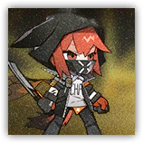

弑君者 Crownslayer
近战 物理；领袖 瑞柏巴
|
 |
整合运动干部。从事敌后活动与突袭暗杀行动，擅长近身攻击与突破防御阵线进行奇袭。渗透能力与隐蔽能力优秀，针对她所进行的多次行动均无功而返。 |
柳德米拉丨Lyudmila
中型类人生物（瑞柏巴），混乱中立
| AC 15 | 先攻 +10（20） |
| HP 105（14d8+42） | |
| 速度 35 尺 | |
| 调整 | 豁免 | 调整 | 豁免 | 调整 | 豁免 | |||||||||
|---|---|---|---|---|---|---|---|---|---|---|---|---|---|---|
| 力量 | 11 | +0 | +0 | 敏捷 | 19 | +4 | +7 | 体质 | 16 | +3 | +3 | |||
| 智力 | 11 | +0 | +0 | 感知 | 16 | +3 | +6 | 魅力 | 12 | +1 | +1 |
| 技能 特技+7，调查+3，求生+6 |
| 免疫 恐慌 |
| 装备 短剑，皮甲 |
| 感官 盲视10尺，黑暗视觉120尺，被动察觉18 |
| 语言 通用语，叙拉古语，乌萨斯语，盗贼黑话 |
| CR 8（XP 3,900；PB+3） |
特质 Traits
暗杀 Assassinate。在开始战斗后的首个回合，柳德米拉对任何未进行过自己回合的生物发动的攻击具有优势，且若命中则视为造成重击。
反射闪避 Evasion。当柳德米拉受到允许其进行敏捷豁免来只承受一半伤害的效应影响时，其豁免成功时不受伤害，豁免失败时只承受一半伤害。其无法在失能期间使用此特质。
动作 Actions
多重攻击Multiattack。柳德米拉发动两次短剑攻击。
短剑 Shortsword。近战攻击检定：命中+7，触及5 尺。命中：18（4d6+4）点穿刺伤害。
附赠动作 Bonus Actions
尘烟蔽目 Fumes Blinding（3/天）。柳德米拉施放云雾术Fog Cloud，柳德米拉以此施放的云雾术不需要专注维持，其施法属性是感知。
硝烟震爆 Fumes Blast。柳德米拉主动结束一片由自己创造的云雾术效应。敏捷豁免检定：DC14，每个除了柳德米拉外位于雾内的生物。失败：28（8d6）力场伤害。成功：半伤。
反应 Reactions
雾遁 Misty Escape（充能6）。触发：柳德米拉被一次攻击命中，且身处重度遮蔽中。响应：这次攻击改为失手。柳德米拉传送30尺至一处可见空地，然后可以发动一次短剑攻击。